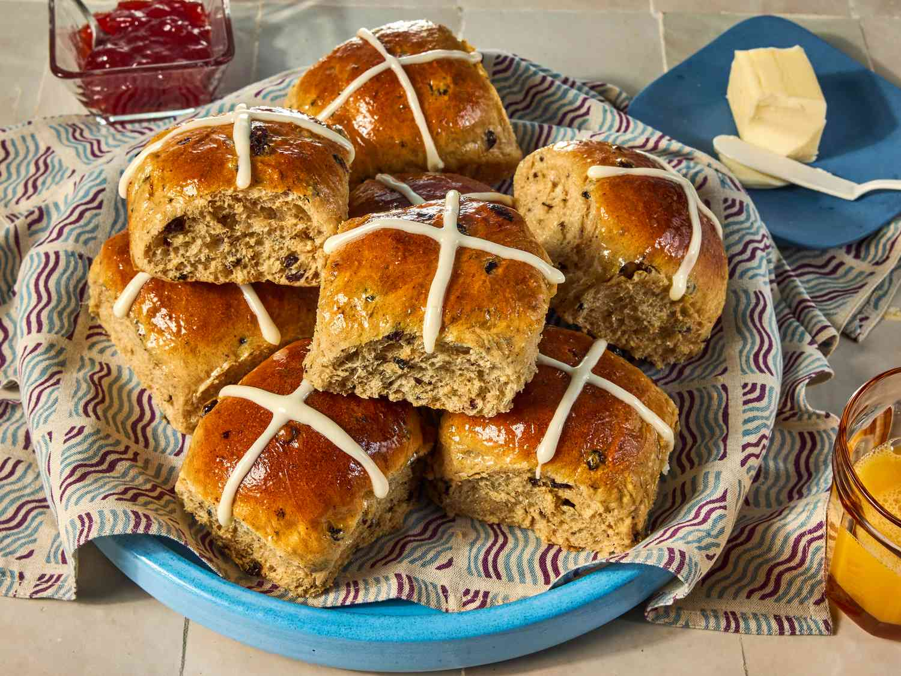

Hot Cross Buns
Home

I love hot cross buns and look forward to making these fruity spiced buns every Easter! I like to make the dough in a bread machine, but I have included instructions at the end of this recipe for using a stand mixer
Ingredients
- 3 cups all-purpose flour
- ¾ cup warm water (110 degrees F/45 degrees C)
- ¼ cup white sugar
- 1 large egg
- 1 large egg, separated, divided
- 3 tablespoons butter, softened
- 1 tablespoon active dry yeast
- 1 tablespoon instant powdered milk
- ⅜ teaspoon salt
- ¾ cup dried currants
- 1 teaspoon ground cinnamon
- 2 tablespoons water
- ½ cup confectioners' sugar
- 2 teaspoons milk
- ¼ teaspoon vanilla extract
Steps
- Gather all ingredients
- Put flour, warm water, white sugar, egg, egg white, butter, yeast, milk powder, and salt in a bread maker and start on dough program.
- When 5 minutes of kneading are left, add currants and cinnamon. Leave in the machine until doubled in size, about 1 hour.
- Punch down dough on a floured surface, cover, and let rest for 10 minutes.
- Shape into 12 even-sized balls and place in a greased 9x12-inch pan. Cover and let rise in a warm place until doubled, 35 to 40 minutes. Preheat the oven to 375 degrees F (190 degrees C).
- Mix egg yolk with 2 tablespoons water in a small bowl; brush on dough. Bake in the preheated oven until golden brown, about 20 minutes. Remove from pan immediately and cool on wire rack.
- To make the piping glaze: Mix confectioners' sugar, milk, and vanilla together until smooth. Spoon glaze into a piping bag or a sandwich bag with the corner snipped off; pipe a cross onto each roll.
- Serve and enjoy!